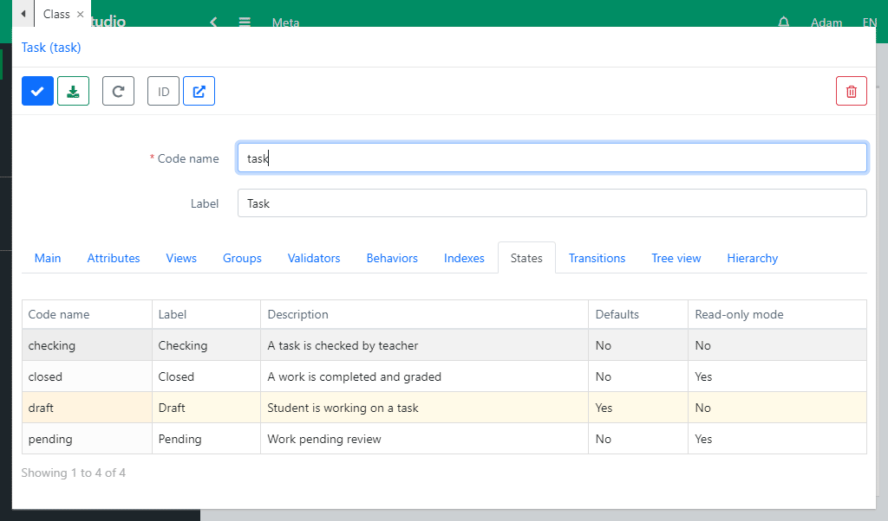

Workflow
Each object of a class can be in a certain state. This allows you to define special functionality for some objects.
Go to the Task class and create a service string attribute State (_state), which will contain the state value of a specific task. Next, select the States tab, which contains a list of all possible states of objects.
Create a Draft state, which means that the student is working on the task. This state will be assigned to all new objects by default. Create a Waiting state, which means that the work is finished and waiting for verification. Next, create a Checking state, which means that the teacher has started checking the solution. And finally, the final state is Closed when the score is set. In this state, an object is read-only.
Transitions are used to change states. Transitions determine how a state can change. A transition can have several initial states, including an empty one, but only one final state.
- Create a Ready transition from the initial Draft state to the final Waiting state.
- Create a Check transition from the Waiting state to the Checking state.
- Create a Complete transition from the Checking state to the Closed state.
- Create a Rework transition from the Checking state to the Draft state.
- Create a Recheck transition from the Closed state to the Checking state.
Export the created metadata using the button on the top panel.